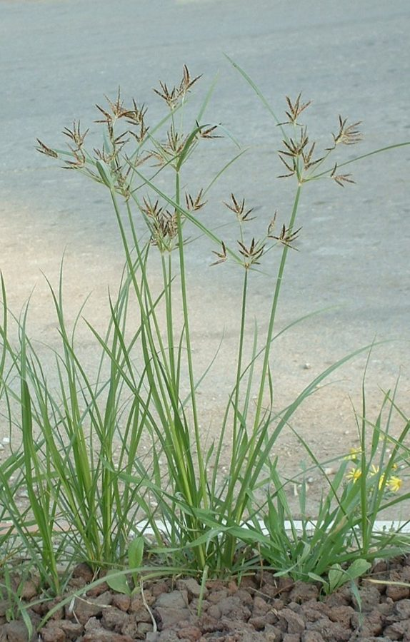

मोथाNutgrass
Cyperus rotundus · Cyperaceae · FLR-0112

- Scientific name
- Cyperus rotundus L.
- Family
- Cyperaceae
- Hindi
- मोथा
- Status here
- native
- IUCN
- not evaluated
When to look कब देखें
Expected mainly in March, April, May, June, July, August, September, October, November.
Uses and possibilities उपयोग और संभावनाएँ
“Traditional medicine” means a documented traditional use, not a claim that it works. Nothing on this page is medical advice.
Drawn from the documented uses in the profile below, where each is labelled traditional, current or a research lead. All uses →
मोथा / Nutgrass
Cyperus rotundus L. — Cyperaceae
मोथा — दुनिया की सबसे ज़िद्दी खरपतवार, और आयुर्वेद की एक पुरानी दवा, एक ही पौधा। घास जैसा दिखता है पर घास नहीं, तिकोने डंठल वाला सेज है; ज़मीन के नीचे धागों में पिरोई छोटी-छोटी काली गाँठें (कंद) हैं जो निराई से कटकर और बढ़ती हैं और सूखे में सालों ज़िंदा रहती हैं। इन्हीं कंदों की सुगंध इत्र और दवा में जाती है।
Quick Identification त्वरित पहचान
| Feature | Description |
|---|---|
| Habit | Grass-like perennial 10–40 cm, in patches, never a tussock |
| Stem | Smooth, solid, sharply three-angled: roll it in the fingers |
| Leaves | Dark glossy green, 2–6 mm wide, grooved, all from the base, shorter than the stem |
| Flower head | An umbrella of 3–8 unequal stalks at the stem top, each with a few flat reddish-brown to purple spikelets 1–3 cm; leafy bracts beneath |
| Underground | Thin wiry rhizomes strung with hard, dark, ridged tubers 1–2 cm ("nuts") that smell faintly of spice when cut |
| The test | Three-sided stem plus the chain of tubers |
Field tip: The commonest "grass" in any weeded field or vegetable plot that comes back a week after hoeing. The triangular stem and the purple-brown umbrella of spikelets name it; dig a few centimetres and the chain of little tubers confirms it, and explains why hoeing does not work.
हिंदी — कैसे पहचानें: डंठल उँगलियों में घुमाइए — तिकोना है तो सेज है, घास नहीं। ऊपर छतरी जैसे बैंगनी-भूरे फूल; नीचे धागे में पिरोई काली गाँठें। निराई के हफ़्ते भर बाद फिर उगे तो मोथा ही है।
Morphology आकारिकी
Biometrics (Indian plains):
| Measurement | Range |
|---|---|
| Height | 10–40 cm, to 60 in shade |
| Leaf width | 2–6 mm |
| Spikelet | 1–3 cm, 10–40 flowers |
| Tuber | 1–2 cm, 0.5–1 cm thick |
| Rhizome depth | mostly 10–25 cm, tubers to 40 cm |
| Tubers per plant | a dozen to several hundred in a season |
Rhizomes and tubers: The whole strategy of the plant. A basal bulb sends out thin rhizomes that swell at intervals into tubers; each tuber can sprout a new shoot and new rhizomes, so a single tuber becomes a colony in one season. Tubers are white and tender when young, dark and woody when old, and dormant tubers survive drought, flooding and months without light. Cultivation breaks the chains and spreads the pieces.
Stem and leaves: The culm is triangular in section, as in all Cyperus, and leafless above the base; leaves are keeled, with a shining upper surface.
Inflorescence: A compound umbel subtended by two to four leaf-like bracts; the spikelets are flattened, with closely overlapping reddish-brown glumes. Seed is produced but is a minor means of spread; the tubers do the work.
हिंदी: एक कंद से एक मौसम में पूरा झुंड: पतली जड़ों पर कंद, हर कंद से नया पौधा और नई जड़ें। पुराने कंद काले और सख़्त, सूखे, बाढ़ और अँधेरे में महीनों ज़िंदा। हल और खुरपी इन्हें काटकर फैलाते हैं। बीज बहुत कम काम करते हैं।
Behaviour & Ecology व्यवहार और पारिस्थितिकी
Listed as the world's worst weed in the classic survey of Holm and colleagues, on the strength of being a serious weed of more than fifty crops in more than ninety countries. It is a C4 plant, fast in heat and sun, and shade is the one thing it tolerates poorly; dense crops and mulch suppress it, open hoed ground invites it. It is at its worst in irrigated vegetables, sugarcane, maize and the dry-season crops of this district, and less in flooded paddy, which drowns the shoots though not the tubers.
In the wider landscape it is a native of the subcontinent that holds bare ground and pond margins, feeds wild pigs, rats, House Crow and Common Myna on its tubers, and feeds the larvae of a few moths and sedge-specialist insects. Its tubers are the aromatic musta of Ayurveda and the nagarmotha of the perfume trade, though the trade name belongs strictly to a related sedge.
हिंदी: होल्म की प्रसिद्ध सूची में "दुनिया की सबसे बुरी खरपतवार" — नब्बे से ज़्यादा देशों की पचास से ज़्यादा फसलों में। धूप और गरमी में तेज़, छाया में कमज़ोर; घनी फसल और पलवार इसे दबाते हैं, खुली निराई हुई ज़मीन इसे बुलाती है। धान के पानी में डंठल डूब जाते हैं, कंद नहीं। सूअर, चूहे, कौए और मैना इसके कंद खाते हैं।
Life Cycle / Phenology जीवन चक्र
| Month / season | Event |
|---|---|
| March–April | Tubers sprout with warmth and the first irrigation |
| April–June | Rapid growth and tuber formation in irrigated fields |
| June–October | Flowering; mass growth through the monsoon |
| November–December | Shoots die back with cold; tubers go dormant |
| Any time | A broken rhizome piece or single tuber starts a new patch |
A tuber can sprout within a week of warmth and water and produce new tubers within three to four weeks; the cycle repeats all season.
हिंदी: गरमी और पानी मिलते ही कंद फूटते हैं; तीन-चार हफ़्ते में नए कंद; बरसात भर फूल; सर्दी में ऊपर सूखता है, नीचे कंद सोए रहते हैं।
Associated Species / Interactions संबंधित प्रजातियाँ
- Crops it plagues: Sugarcane, Maize, Indian Mustard, Brinjal, Tomato, Chilli and every vegetable; less in Paddy.
- Fellow field weeds: Bathua, Spiny Amaranth, Field Bindweed, Doob Grass.
- Tuber eaters: House Crow, Common Myna, rats, wild pigs.
Pests and Diseases कीट और रोग
- Few natural enemies strong enough to matter; a moth (Bactra verutana) bores the shoots and has been tried as a biological control.
- Rust and smut fungi on the leaves and spikelets in wet weather.
Agricultural / Human Relevance कृषि प्रासंगिकता
The weed. Yield losses of a fifth to a half in vegetables and sugarcane under heavy infestation are recorded. Hoeing and ploughing make it worse by cutting and spreading the chains; what works is depriving it of light and the tubers of moisture: a dense crop canopy, mulch, repeated shallow cultivation in the hot dry weeks to dry out exposed tubers, flooding where the crop allows, and in commercial farming selective herbicides. There is no cheap cure, which is why it is everywhere.
Traditional and Ethnobotanical Use (documented uses; not medical advice):
- Medicine. The tuber, musta or mustaka, is among the oldest drugs of Ayurveda, prescribed for fever, digestive complaints and as a stimulant and diuretic; it appears in dozens of classical formulations and in Kirtikar & Basu and Chopra. Tuber decoctions are a folk remedy for stomach upsets across northern India.
- Perfume and incense. The aromatic tubers, dried, scent hair oils, incense and the attars of Kannauj; a related sedge (Cyperus scariosus) is the true nagarmotha of the trade but this species is used too.
- Food in famine. The tubers, bitter and small, were eaten roasted in scarcity, as they still are in parts of Africa and were by early people on the Nile.
- Fodder. Grazed by cattle and buffalo when young.
Today. Tubers are collected from the wild for the Ayurvedic and perfume trades; there is no cultivation, and the weed problem dwarfs the value.
Research direction (a lead, not a result). The essential oil of the tubers (cyperene, cyperone and related compounds) is studied for antimicrobial and insect-repellent activity, and the tubers themselves as a source of starch and oil from an unwanted crop; a few Indian papers consider "harvesting the weed". Whether gathering motha tubers from infested fields could ever pay a farmer is an open and rather appealing question.
हिंदी: खरपतवार के रूप में सब्ज़ी और गन्ने में पाँचवाँ से आधा नुकसान दर्ज है; खुरपी और हल इसे बढ़ाते हैं, घनी फसल, पलवार, गरमी में उथली जुताई से कंद सुखाना और पानी भरना इसे दबाते हैं। दवा के रूप में इसका कंद "मुस्तक" आयुर्वेद की सबसे पुरानी औषधियों में है — बुख़ार और पेट के लिए; कन्नौज के इत्र और अगरबत्ती में भी। क्या खेत से मोथा के कंद इकट्ठा करके बेचना कभी किसान को फायदा दे सकता है — यह एक खुला सवाल है।
Expected Locally स्थानीय रूप से अपेक्षित
Not a field record. Written from published accounts for eastern Uttar Pradesh. No confirmed local sighting yet — if you have seen it, that is what the atlas needs.
अभी तक स्थानीय पुष्टि नहीं। यह विवरण प्रकाशित स्रोतों से है, किसी अवलोकन से नहीं।
To be expected in every irrigated field, vegetable plot, orchard and lawn in the district, on bunds and roadsides and pond margins, and in the sugarcane of the eastern blocks. Among the easiest of all species to confirm: a three-sided stem and a chain of tubers from any weeded garden.
Distribution वितरण
Global range: Native to the Old World tropics and subtropics, probably including India; now in every warm country on earth.
In India: Throughout, from sea level to about 2,000 m, in every cultivated district.
In Uttar Pradesh: Ubiquitous.
In Basti district / eastern UP: Expected in every cultivated and disturbed place.
Research Questions शोध प्रश्न
Anyone can investigate these | कोई भी इन प्रश्नों की जाँच कर सकता है
- How many tubers are under one square metre of a weedy vegetable bed? / एक वर्ग मीटर सब्ज़ी की क्यारी के नीचे कितने कंद हैं? — Dig to a hand's depth, sieve, count.
- Which crop in your village has the worst motha, and which the least? / किस फसल में सबसे ज़्यादा मोथा, किसमें सबसे कम? — Walk the fields in August; score each.
- Does mulch stop it? — Cover one bed with straw in April and leave another bare; count shoots in June.
- Does anyone use motha tubers as medicine or scent here? — Ask the vaidya and the older women.
- Which birds dig for the tubers after ploughing? — Watch a freshly ploughed field for half an hour.
Similar Species मिलती-जुलती प्रजातियाँ
| Species | How to tell apart | हिंदी |
|---|---|---|
| Yellow nutsedge (Cyperus esculentus) | Spikelets yellowish-brown, tubers single at the rhizome tip and not in chains; less common here | पीले फूल, कंद अकेले |
| Umbrella sedge (Cyperus iria) and other annual sedges | No tubers; pulled up with a fibrous root; spikelets greenish-yellow | कंद नहीं, जड़ रेशेदार |
| Doob Grass (Cynodon dactylon) | A true grass: round or flattened stem, runners above ground, finger-like seed heads | गोल डंठल, ज़मीन पर फैलने वाली |
Field rule: A triangular stem, a purple-brown umbrella of spikelets, and a chain of hard dark tubers underground is motha; a grass has a round stem and no tubers.
Taxonomy & Classification वर्गीकरण
Original description. Linnaeus, Species Plantarum 1: 45 (1753). Cyperus is the Greek name of a sedge; rotundus, "round", for the tubers.
Subspecies. No subspecies are currently recognised in most treatments, though the species is variable and several varieties have been described.
Family and order placement. Cyperaceae, the sedge family, order Poales; Cyperus holds about 700 species worldwide, including papyrus and the edible tiger-nut.
Phylogenetic notes. A C4 sedge of the Cyperus core clade; global populations are nearly identical genetically, consistent with spread by tubers and little seed.
IUCN status rationale. Not evaluated. Among the most widespread plants on earth.
Photo Gallery फोटो गैलरी
Photos needed आवश्यक फोटो
- [ ] Patch in a vegetable bed with flower heads (खेत में)
- [ ] Cross-section of the three-sided stem (तिकोना डंठल)
- [ ] Dug plant with the chain of tubers (कंद)
Atlas Connections संबंधित प्रजातियाँ
- Doob Grass — the grass it is mistaken for
- Bathua, Spiny Amaranth, Field Bindweed — the weeds it grows among
- Sugarcane — the crop it damages most
- Common Myna — digs its tubers from ploughed ground
References संदर्भ
- Linnaeus, C. (1753). Species Plantarum, vol. 1, p. 45. Stockholm. [original description]
- Holm, L.G., Plucknett, D.L., Pancho, J.V. & Herberger, J.P. (1977). The World's Worst Weeds: Distribution and Biology. University Press of Hawaii, Honolulu.
- Clarke, C.B. (1893). Cyperaceae. In Hooker, J.D., The Flora of British India, vol. 6. L. Reeve, London.
- Kirtikar, K.R. & Basu, B.D. (1935). Indian Medicinal Plants, 2nd ed., vol. 4. Lalit Mohan Basu, Allahabad.
- Chopra, R.N., Nayar, S.L. & Chopra, I.C. (1956). Glossary of Indian Medicinal Plants. CSIR, New Delhi.
- Council of Scientific and Industrial Research (1950). The Wealth of India: Raw Materials, vol. 2 (C). CSIR, New Delhi.
- Bendixen, L.E. & Nandihalli, U.B. (1987). Worldwide distribution of purple and yellow nutsedge (Cyperus rotundus and C. esculentus). Weed Technology 1(1): 61–65.
- GBIF Occurrence Data — Cyperus rotundus, India (2026).
Source file: species/flora/weeds/motha.md